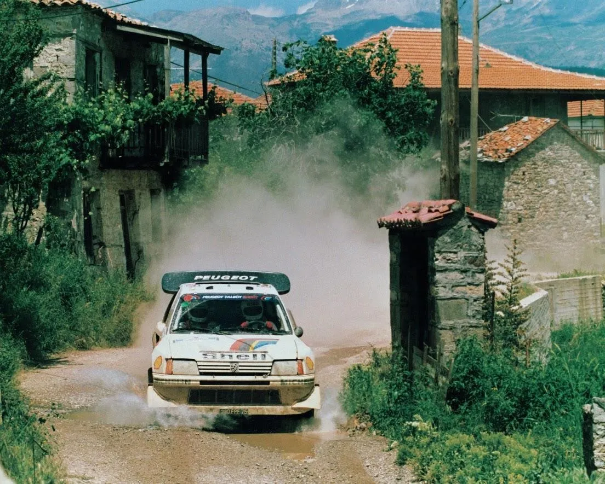
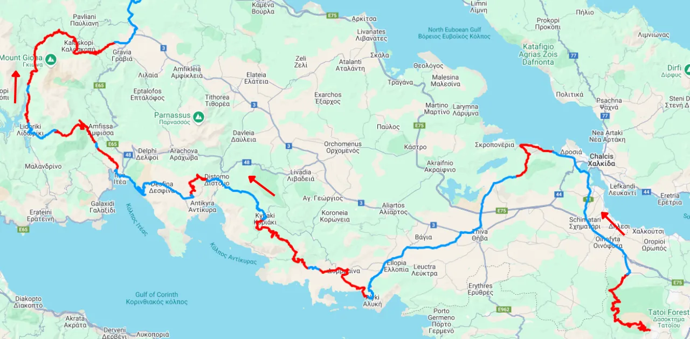
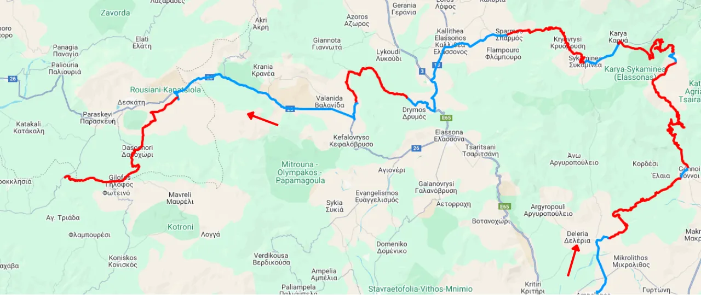
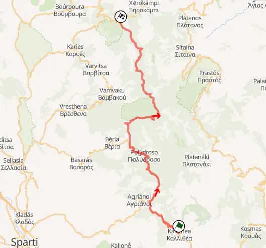
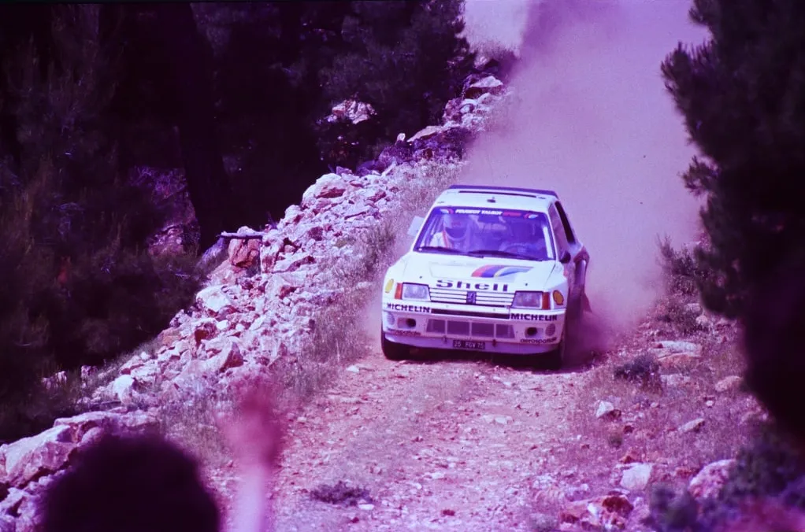
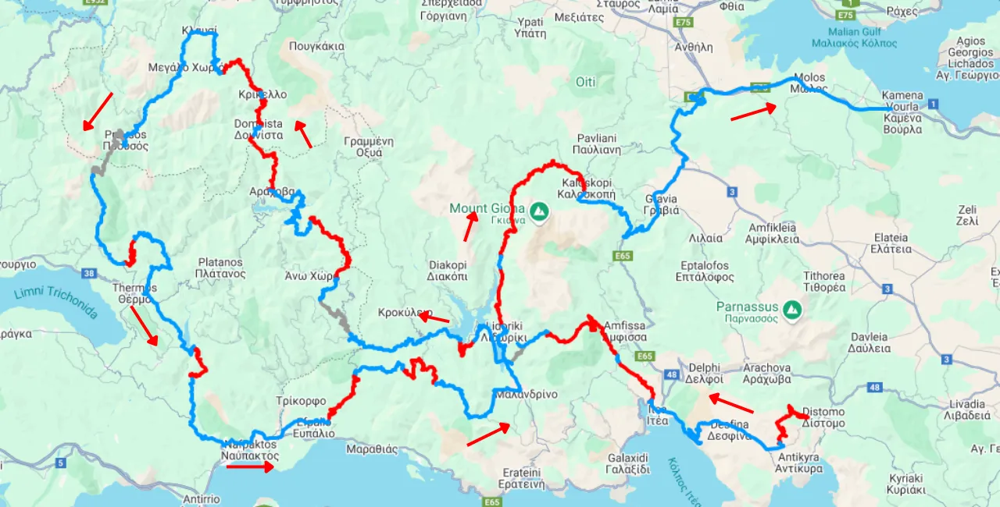

Route History of the Acropolis Part 2: 1981-1986
Considered by many as the golden age of the Acropolis Rally, the peak of the Group B era saw the rally continue to be rough and long, and visit most of continental Greece.
We continue this series of posts with the 1981-1986 editions of the Acropolis Rally, the Group B era. In this era, the Acropolis started to be less of an endurance rally with 1000km of stages to one that was more accustomed to the norms imposed by the governing body. By 1986 the event would be almost half of what it was in 1980.
1981-1982: A more compact route
For 1981 the night to dawn leg of Day 2 was merged into the first day of the rally, meaning the crews would go from Lagonissi to Kalampaka. The rally would no longer head as north as Veria or Naousa, meaning stages like Polydendri, Kato Vermion and Aliakmon Lake wouldn’t be used in the rally again.
The rally started on Monday June 1st, and had a format similar to the ones of 1980, starting from Parnitha, then moving on to Loukissia, heading to south to Viotia with Aliki, Prodromos, Distomo, then Fokida with Bauxites and Karoutes. SS Lidoriki would return for the first time since the inaugural edition of the rally in the WRC, with the 43km stage Sikea following.
After SS Moschokaria a 4.44km stage called Moschokaria II which finished in Agios Stefanos would be added, after which the classic Makrirahi test would follow.

Map of the first half of Leg 1 (approximation)
The cars would move north-west to Larissa next, with Gonnoi in Olympos being a known stage in the area, being exceptionally technical, having a myriad of hairpins and slow corners. Such was the nature of the stage that it was also used under the name Gonnoi Hairpins in 1982 and previous editions. Whoever survived this monster day would head west to Kalampaka, with Deskati being the last stage of the day.

Map of the second half of Leg 1 (approximation)
Leg 2 of the rally would be from Kalampaka back to Lagonissi. Virtually identical to 1980, the crews would start from the iconic Meteora stage, and then head south. For 1981, a massive 45.74km stage in Loutropigi would feature. The last stage of the day would be Loukissia in reverse.
Day 3 would again be overnight, but the cars wouldn’t make it to Olympia, instead they would head straight to Gytheio in Lakonia. Before the leg started, the Audi Quattros which were dominating the rally would be disqualified due to having additional air intakes in the grille of the car where the headlights were supposed to be. SS35 Mandra would be cancelled due to spectator problems. Agioi Theodoroi would be used for the first time in 1981, after which the cars would head deeper in Corinth, and then Tripoli.
Live broadcast of SS Moschokarya from 1984
The last day of the rally was in Lakonia and Argolis. For the first and only time a stage would be repeated three times in the Acropolis, SS Geraki, which was also the fastest of the rally. The loop of Geraki-Parnonas was repeated twice, and after that the crews would head to Argolis for Malevi and Karnezeika before taking the ferry to Poros.
Parnonas was the longest stage of the rally at 47.1km, and a combination of roads from stages used before in the area.

Map of SS Parnonas
Rally-Maps.com
For 1982 the itinerary would remain the same, with the only difference being that Mandra and Agioi Theodoroi would be swapped for Aghios Ioannis and Shinos, stages which were used in the rally in 1979. This would also be the last year stages in Mount Olympus would be used. Michelle Mouton won the rally that year, in perhaps the most celebrated win in the history of the Acropolis Rally.
1983-1985: The route starts to shrink and paved sections appear
For 1983 the event would be shrunk in size by roughly 100 competitive kilometers with the event skipping on much of the night leg of day 1. The opening stages were identical to 1981 and 1982, but after Makrirahi there were only 3 stages, Verdikoussa, a new stage which was very slow and technical, Klissoura and Deskati.
Leg 2 saw some new stages on the descent from Kalampaka to Lagonissi. Smokovo and Loutropigi were replaced by Neraida and Rahoula. Neraida was a massive 52.7km long, and was rough and slow. The cars would make it back to Lagonissi following repeated runs of Karoutes, Bauxites, Distomo, Prodromos and Platanaki, as usual.
Video from SS Makrirahi from 1983
Leg 3 was also more compact for 1983. It would start on Wednesday night, and finish on Thursday morning. Just like Day 1 of the rally, it was effectively a merger of the overnight leg + the Parnonas/Argolis leg that was used in the past. The crews would start from Athens at night, make their way through Corinth, Arkadia, Lakonia and Argolis. The stages were the same as previous editions, but there would be no repeated stages understandably. SS Parnonas was still in the rally, and was the last “scary” stage of the event, being run at dawn, 3 stages from the end.
The 1983 edition had 46 stages compared to the 57 used in 1982.
For 1984 and 1985 there would be some changes to the itinerary on Friday. Parnitha was removed from the itinerary, as was Aliki, the latter due to it being paved. Instead, the rally would start from Imittos to the east of Athens, which was a car breaker of a stage, with another new stage on the outskirts of the capital in Dionissos following. After that, the crews would have the familiar Loukissia stage, before turning south to Viotia. There was another new stage there, SS Vagia, near Thiva, which was exceptionally rough and had some jumps near the end, which were flattened for 1985.

Salonen in the very rough Imittos test in 1985
George Stamatis
After that it was the usual trip up to Kalampaka, which included two new stages between Moschokaria and Makrirahi, Arhani and Asvestis. These two would be part of the rally until the mid 90s. Timo Salonen would break his suspension in Arhani in 1986.
The second leg of the rally was the same as 1983, but the overnight leg of the last day saw some changes. For 1984 Kineta and Aghia Sotira were included for the first time instead of Agios Ioannis and Schinos. Aghia Sotira was very rough and rocky, while Kineta was rough, it also had some nice fast sections. Parts of it are still used in the Acropolis to this day.
The rally would again end after a pass through the stages in the Parnonas mountain and the Malevi and Karnezeika stages.
For 1985, the itinerary would be identical to the one of 1984, but would see some more paved sections, including the first half of the Meteora stage. 1985 was also the last year the rally would travel to Meteora and Lakonia. Elikonas would also not be used after 1985, with most of its route being paved.
Highlights from Loukissia, Distomo, Moschokaria, Tsouka, Meteora and Elikonas from the 1985 version
1986: The end of an era
The original 1986 Acropolis Rally itinerary was 110km shorter compared to 1985, with the governing body further restricting the organisers of rallies, and demanding more compact routes. Tragedy would strike before the rally however. In Corsica, Henri Toivonen would go off the road in his Delta S4 and the subsequent explosion would kill both him and co-driver Sergio Cresto.
FISA announced emergency measures after Corsica, one of which was a further decrease in competitive kilometers, capping the maximum distance allowed to 600km.
8 stages were cancelled before the start of the rally, with the event now being 574km long.
Toivonen and Cresto's death would also impact the entry list of the upcoming rallies, with Audi withdrawing immediately, and Ford withdrawing after Acropolis.
Day 1 was just over a hundred kilometers and started in Athens. The first three stages were the same, Imittos, Dionissos and Loukissia. The latter was now on both tarmac and gravel, with some sections of the stage being paved. After that the cars would head back to Attiki for Assopia, Ossios Meletios, which was fast but was very rough and was a puncture-fest in 1986, with Aghia Sotira and Kineta following.
For the second leg it was originally planned for the crews to tackle some stages of the previous day a second time, however these were among the ones being cancelled, so the crews would instead head straight to Distomo and then to Itea for Bauxites and Karoutes. Instead of Lidoriki SS Doriko would be used, again overseeing the Mornos lake.
The rally would head east, not north, with stages in Aetolia and Evritania. Stages like Elatovrissi and Domnista would be used for the first time. It would then loop south with a mixed surfaced stage near Nafpaktos leading the cars back to Fokida with Lidoriki and Sikea being the last stages of the day. The cars would head to Kamena Vourla for the overnight halt.
SS Arahova was devastating for the Ford team, with their drivers, who were running first and second, both retiring. Leader Kalle Grundel would retire after four studs on one wheel became stuck. His attempts at repairs during service caused him to exceed the time limit. Meanwhile, teammate Stig Blomqvist had a more straightforward retirement, as he crashed out of the rally.

Map of the second leg of the 1986 rally (approximation)
Marked with gray are the cancelled stages in the area
Day 3 was similar to the descent from Kalampaka to Athens, only this time it would be from Kamena Vourla. Starting from Moschokaria, the cars would then head north to Arhani, Asvestis and then Makrirahi, after which a run of Rahoula and the shortened Neraida stage followed. Not that it was a short stage mind you, it was still 30km long. Tarzan would be next, returning to its classic route, starting from Tarzan’s hut and ending in Tsouka, with the last section before the finish being exceptionally rough and technical.
Gardiki and Grammeni Oxia would be used for the first time in 1986, two stages that go hand in hand, as they’re quite literally next to each other. Both were spectator favourites, and were very technical and twisty. Gardiki climbed up to 1700m of altitude, and Grammeni Oxia was a mix of uphill and downhill hairpins.
A mixed-surface version of Karoutes would follow with Bauxites then being run downhill. Desfina would be used for the last time in 1986, after which Aluminum would be used, starting from the mines south of Distomo, with Platanaki being the last stage of the rally.
Alen's engine expired in Aluminium, making this an easier win for Juha Kankkunen.
Stages used in all years from 1981-1986
- Distomo
- Bauxites
- Makrirahi
- Moschokaria
- Karoutes
- Loukissia
- Sikea
- Lidoriki
- Prodromos*
- Desfina
*Prodromos was due to be ran in 1986, but both runs were cancelled
Stages used in all years from 1973-1986
- Distomo
- Makrirahi
- Moschokaria
Percentage of entries that finished the rally
1981: 16.5%
1982: 23.5%
1983: 30%
1984: 30.7%
1985: 40.9%
1986: 33.7%


Comments